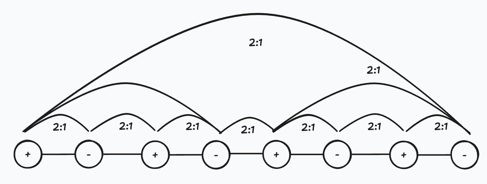

Public research abstract · differences / closure / material memory
From Differences to Distinguishability
How contact becomes memory and stable closure becomes form in a minimal non-neural carrier
Starting claim
This work begins from a physical conjecture: before the finished object there are differences—ways one possible state can change another otherwise. Differences exist before a contact in which they can become distinguishable. Absence of distinguishability in one contact is therefore not absence of differences; this contact has simply not yet made them part of one physical fate.
A particle, body, or material form is treated as a persistent closure of differences: not a final bead of reality and not a graph of bonds, but a temporarily stable balance of mutually sustaining differences. Once later contact meets that closure as one whole, it becomes distinguishable as one at its scale and a new difference for the next closure.
Contact produces distinguishability
Differences become distinguishability when meeting acquires a physical consequence: replacing one history with another changes the distribution of a later contact. D+ is the strongest such future difference over admitted continuations. One blind probe cannot establish equivalence across every future.
Measurement is therefore contact, not an external photograph. It participates in which differences close into a registered result; the outcome belongs to the joint continuation of system and apparatus. The same criterion anchors memory: the past matters when retained change alters what can happen next.

Difference becomes distinguishability in a held relation.
+A and −A are gestures in this encounter, not permanent properties of two objects.
Exact causal mechanism · reentry passes through the same changed carrier
D+ is an external witness of the changed future; it does not select a path.
From contact to form
Memory is a changed future carried by the changed body itself.


2:1 closures remain inside it.